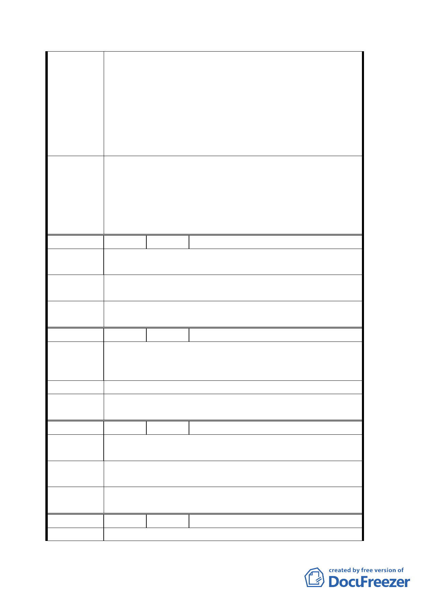

之校園建築物、圍牆、及雜項工作物。
1. 北醫行政大樓（即 64 使字第 1099 號使用執照）
建築物，距離境界線僅 1.8M：應將違法部分拆
除（留出淨空 3.64M 距離）。
2. 右述建築物之殘餘部分，若擬續供使用：應經
建築師安全鑑定、按照現行法規檢討其用途，
並經專業廠商補強整修確保安全無虞後，依法
申領變更使用執照。
一、本計畫案原則通過。
二、請市府相關單位（建管處、交通局）處理北醫建築管
委員會決
理及停車位問題。
議 三、請市府相關單位通盤檢討双和里及鄰近地區都市計畫
及更新事宜。
編 號２
陳情人 陳闕含少 等 39 人
相臨信安街附近老舊社區目前為住二使用高度影響當地居
陳 情 理 由 民發展意願。
政府應為整體土地利用及發展考量將容積率提高，變更住
建 議 辦 法 二為住三。
委員會決 請市府相關單位通盤檢討双和里及鄰近地區都市計畫及更
議 新事宜。
編 號３
陳情人 林水原 等 44 人
本計劃案區域頗廣市容嶄新但由於信安街周邊住二區域土
陳 情 理 由 地皆百年以上老厝因住二容積率低改建意願相對受影響對
將來整體環境難以配合殊為可惜。
建 議 辦 法 變更住二為住三，鼓勵當地居民配合發展。
委 員 會 決 請市府相關單位通盤檢討双和里及鄰近地區都市計畫及更
議 新事宜。
編 號４
陳情人 林美華
吳興街 284 巷 11 弄導通後因傳統市場攤販多攤販車更多環
陳 情 理 由 境髒亂 284 巷 11 弄居民未蒙其利先受其害
請一併考量吳興街接到雙和里周邊道路做整合規劃及老舊
建 議 辦 法 社區更新計畫
委 員 會 決 請市府相關單位通盤檢討双和里及鄰近地區都市計畫及更
議 新事宜。
編 號５
陳情人 鄧慶宗
陳情理由
五